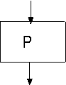
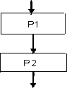
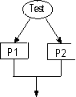
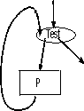

| « poprzedni punkt | nastêpny punkt » |
Pojêcie algorytmu pojawi³o siê du¿o wcze¶niej ni¿ komputer. Algorytmy liczbowe znane s± od czasów antycznych, np. algorytm Euklidesa znajdowania najwiêkszego wspólnego dzielnika dwóch liczb naturalnych. Samo s³owo "algorytm" pochodzi od nazwiska matematyka perskiego z 9 wieku n.e.: Abu Ja'Far Mohammed Ibn Mûsâ al-Khowâ-rismî, który poszukiwa³ metod wykonywania podstawowych operacji arytmetycznych. Nieformalnie, algorytm jest metod± postêpowania, okre¶laj±c± ¶ci¶le kolejne etapy i wykonywane operacje, w celu rozwi±zania danego problemu.
Takie rozumienie algorytmu jest bardzo ogólne i nie zawsze odpowiada procesowi postêpowania, który ma byæ realizowany przez komputer. Na ogó³ mamy do dyspozycji tylko skoñczon± przestrzeñ do przechowywania danych i skoñczony czas, w którym chcemy zakoñczyæ postêpowanie. Matematycy pocz±tków XX wieku, jeszcze przed powstaniem pierwszego komputera, wiele uwagi po¶wiêcili sformalizowaniu pojêcia algorytmu. Powsta³y formalne definicje obliczalno¶ci, oparte o abstrakcyjne modele licz±ce, np. funkcje rekurencyjne, algorytmy Markova, maszyny Turinga. Okaza³o siê te¿ wkrótce, ¿e wszystkie zaproponowane modele s± równowa¿ne, w tym sensie, ¿e definiuj± tê sam± klasê funkcji obliczalnych. W zwi±zku z tym Church sformu³owa³ hipotezê (tzw. Teza Churcha), ¿e wszystkie "rozs±dne " pojêcia algorytmu s± sobie równowa¿ne. Obecnie, w dobie komputerów, mo¿na uznaæ, ¿e ka¿dy jêzyk programowania definiuje pewn± klasê algorytmów. Pojêcie algorytmu jest jednak ogólniejsze i nie musi siê wi±zaæ z ¿adnym konkretnym komputerem, ani ¿adnym konkretnym jêzykiem programowania. Tym niemniej, musimy stosowaæ tak± notacjê do opisu algorytmów, która umo¿liwi nam ich analizê.
Idealny algorytm to taki, który jest krótki, ³atwo go zrozumieæ, który liczy szybko, zawsze daje dobre wyniki i zajmuje ma³o miejsca w pamiêci komputera. Aby sprostaæ tym wymaganiom, trzeba przede wszystkim zapisaæ algorytm w jêzyku o prostej sk³adni. Wydaje siê, ¿e jêzyk (Algolopodobny) zawieraj±cy instrukcjê przypisania oraz instrukcje: z³o¿enia, warunkow± i pêtli, spe³nia te wymogi. Z czasem rozszerzymy go o procedury i funkcje, tak by mo¿na by³o opisywaæ procesy rekurencyjne. Ka¿dy algorytm bêdzie mia³ jedn± z wymienionych postaci
nazwa_algorytmu{
instrukcje}
lub
typ_wyniku nazwa_algorytmu(parametry){instrukcje}.
Algorytmy pierwszego typu nazywaæ bêdziemy czasem procedurami, a drugiego funkcjami. W tym wyk³adzie, bêdziemy zapisywali algorytmy u¿ywaj±c :
Uwaga. Czasami dla wygody, stosowaæ bêdziemy instrukcjê "for" zamiast instrukcji pêtli "while". Instrukcja "for i:= k to n do P od" oznaczaæ bêdzie to samo co program {i := k; while i< n+1 do P; i := i+1 od}.
Instrukcje sk³adania, warunkowa i instrukcja pêtli s± podstawowymi metodami konstruowania algorytmów. Dodatkowo, dopuszczaæ bêdziemy instrukcjê wywo³ania wcze¶niej zdefiniowanej procedury lub funkcji. Takie wywo³anie zapiszemy w postaci:
nazwa_algorytmu(parametry_aktualne).
Jak Czytelnik zauwa¿y³, w opisie algorytmów, nie bêdziemy u¿ywali instrukcji skoku typu "go to". Wiadomo, ¿e tak± instrukcjê mo¿na wyeliminowaæ z ka¿dego programu: mo¿emy programowaæ strukturalnie, bez u¿ycia instrukcji skoku. Jednak w pewnych wypadkach, szczególnie w pêtlach lub procedurach, wygodnie jest u¿yæ specjalnej instrukcji exit, która przerywa dzia³anie pêtli, lub instrukcji return pozwalaj±cej przerwaæ wykonanie funkcji lub procedury i wróciæ do instrukcji nastêpuj±cej po jej wywo³aniu.
By u³atwiæ zrozumienie algorytmów, bêdziemy siê starali rozbiæ d³u¿sze i bardziej skomplikowane algorytmy na modu³y. Rolê ka¿dego modu³u okre¶laæ bêdziemy stosuj±c komentarze (zaznaczone symbolem //) albo w jêzyku polskim, albo w postaci formu³ logicznych. Takie formalne komentarze, specyfikuj±ce zachowanie fragmentów programu, s± bardzo pomocne przy uzasadnianiu semantycznej poprawno¶ci programu.
Zamiast formy tekstowej, czasami jest wygodnie u¿yæ formy graficznej programu, zwanej grafem programu. T³umaczenie z jêzyka instrukcji na jêzyk grafów, i odwrotnie, jest jednoznaczne: ka¿dy graf programu jest jednej z czterech mo¿liwych postaci:

lub 
lub

lub 
Rysunek 2.1 Grafy podstawowych instrukcji.
Wêz³ami takiego grafu s± prostok±ty, odpowiadaj±ce akcjom, i owale odpowiadaj±ce testom wykonywanym przez algorytm. Orientacja krawêdzi wskazuje na kolejno¶æ wykonywania instrukcji.
Z punktu widzenia semantyki, algorytm opisuje funkcjê czê¶ciow± przeprowadzaj±c± dane pocz±tkowe w wyniki. Poniewa¿ dane pocz±tkowe, to pocz±tkowe warto¶ci zmiennych, a wyniki koñcowe, to te¿ warto¶ci pewnych zmiennych, które uznali¶my za wa¿ne, zatem ka¿dy algorytm Alg mo¿emy rozumieæ jako funkcjê czê¶ciow±:
odwzorowuj±c± zbiór warto¶ciowañ W (tzn. zbiór warto¶ci zmiennych) w zbiór warto¶ciowañ. Jest to funkcja czê¶ciowa poniewa¿ mo¿e siê zdarzyæ, ¿e algorytm nie zatrzymuje siê dla pewnych danych pocz±tkowych. Zak³adamy, ¿e Czytelnik zna i rozumie semantykê podstawowych instrukcji. Zreszt±, do¶æ dobrze wyja¶niaj± j± przedstawione wy¿ej grafy programów.
Pytanie 2: Jak± funkcjê w zbiorze liczb rzeczywistych wyznacza algorytm { x := 2 ´ x + 3; x := x ´ x;}? .
| « poprzedni punkt | nastêpny punkt » |